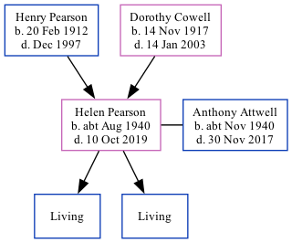

Helen Anne Attwell (née Pearson) cAug 1940 - 2019
[ Home ] | [ Calendar ] | [ Surnames Index ] | [ Family History ]The child of Henry Pearson and Dorothy CowellHelen Pearson, a cousin on the mother's side of Nigel Horne, was born in Eastry, Kent, England c. Aug 19401,2,3. She married Anthony Attwell (with whom she had 2 surviving children Christopher James and Richard Anthony) in Thanet, Kent, England around Feb 19614. In 2003, she lived at 117 Cramptons Road, Sevenoaks, Kent5.
She died on Oct 10, 2019 in Sevenoaks, Kent, England1.
Parents
- Henry Manuel was born on Feb 20, 1912
- Dorothy Helen was born on Nov 14, 1917
Citations
- England & Wales Deaths 2007-2020 - Findmypast
- England & Wales births 1837-2006 - Findmypast
- England & Wales, Birth Index: 1916-2005 Online publication - Provo, UT, USA: The Generations Network, Inc., 2008.Original data - General Register Office. England and Wales Civil Registration Indexes. London, England: General Register Office. © Crown copyright. Published by permission of the Cont
- England & Wales, Marriage Index: 1916-2005 Online publication - Provo, UT, USA: The Generations Network, Inc., 2009.Original data - General Register Office. England and Wales Civil Registration Indexes. London, England: General Register Office. © Crown copyright. Published by permission of the Cont
- UK, Electoral Registers, 2003-2010
Media
England & Wales marriages 1837-2008 - BMD/M/1961/1/AZ/001016/046
England & Wales births 1837-2006 - BMD/B/1940/3/AZ/000871/018
England & Wales Deaths 2007-2020 - BMD/D/MILLEN/003869719
Family Tree
Generated by ged2site. Last updated on Nov 13, 2024